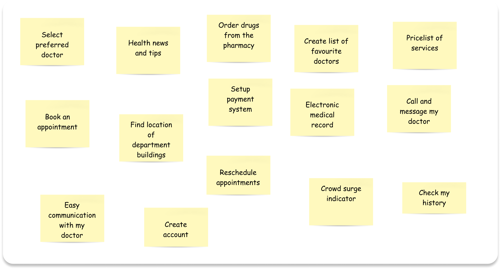

It is globally agreed that a well-designed health system delivers timely and convenient access to health services which, in turn, affects the general health of a population and its life expectancy. Accessing this health system generally dictates that patients book and reserve appointments, usually, on arrival at the health facility and, depending on the amount of other patients waiting to see the doctors, they have to wait long hours.
A POC mobile/web app that regulates appointment booking process allowing patients book appointments with their doctors from the convenience of their devices.
44 is a publicly funded hospital, it gets many visitors for the relativley low prices for the services available. They get complaints
ever so often and want to create a system that improves the service efficiency and improve the patient satisfaction levels.
Miles (19) is always reluctant to go to the hospital anytime he falls ill, he always asks for someone to come along.
“...when I go to the hospital myself, I come back more stressed than before I went.”
During some of our discussions, he voiced the reasons for this.
crowdedness
Methods of booking appointment
Book-keeping Issues
We hypothesized that some digitalization and automation of the hospital service could mitigate the stress
that came along with the current appointment booking experience.
Heading out for some research we understood that any real solution would involve a synergy between all the
parties involved in booking a doctor appointment: doctors, patients and ancillary staff.
I collected statistical and contextual data from ethnographic studies. I recorded the amount and demographics of people present in the waiting rooms at different times of the day and observed their interactions of a few with the hospital staff, from entry till departure. I observed this for 3 different days.
On each day, I would give survey forms to about 6 patients, 2 of which, I would subsequently interview

We targeted the out-patients, as they are the more dynamic and accessible patients. We also set out to target a relatively young demographic (ages 18-55) of this sub-section of patients which, we thought would be easier to communicate with and be able to operate a cellphone and to test with.

All the data from interviews, contextual studies and workshops with stakeholders were distilled into a service design blueprint to visualise and better understand the relationships between the different service components.
The issues the patients had, mostly boiled down to the lack of control they had over how their time was being spent. Uncertainties and long waiting times made them feel uneasy during the process.
From the pain points we uncovered during research, we carried out some How Might We tasks to brainstorm possible solutions.
After carrying out some Effort/Impact analysis we decided to go with some solutions, and taking into account the aggregate pain point ranking and the journey-map opportunities, we reached some conclusions.
Adhering to a scrum framework, we created and compiled a backlog of high-level goals called ‘initiatives/Activities’ from the user needs. These are to be decomposed sprint by sprint, into concise, feasible bits called epics and user stories, for future iterations, updates and functionality implementation along the product life-cycle.
Referring back to our research reults, we agreed that the first stage and core of our digital solution should focus on making sure users can effectively book an appointment.
We translated the epic/user story into a user flow and determined the pages needed to complete the task (we try to imitate the real life customer journey to booking an appointment).

Based on the detailed user stories, we determined what UI features were required on each page to complete a user flow, rapidly sketching and iterating.
We approached a few of the patients(6) some of whom had been involved in the initial research phase, (we made sure to cover the different persona groups).
Usability testing uncovered some issues and a few changes were made, mainly with responsivity and copywriting.


Although the product hasn’t launched yet, the hope is to see it become a reality as it could actually help the
peoples of the town access medical care less stressfully.
The users we tested with were happy with the designs, how we were able to translate their issues with the clinic service into neat solutions.
Some of the projected outcomes include:
Reduction in time spent waiting for doctors (through more contextual and qualitative research).
Regulation of amount of waiting patients at a time.
A general increase in outpatient satisfaction levels.
Coming back to an archived project and completing an MVP was very fulfilling. A few things I learnt and would apply next time:
Properly log every bit of data I synthesize for easy recall, they will always come in handy.
Be more bold to take more pictures.
Wording the test questions for ease of comprehension is important.
Overall, I learnt to be comfortable in the chaos of design and believe in the process, that a solution will come.
Conduct more rounds of usability studies to find out how well the patient pain-points are being addressed
Incorporate more features into the product based on the backlog of tasks/activity/initiatives
Design for responsivity across device screens
Digitalise the patient medical records for ease of management.
For a more detailed case study, please feel free to email me at:
Thank you for your time. Cheers!